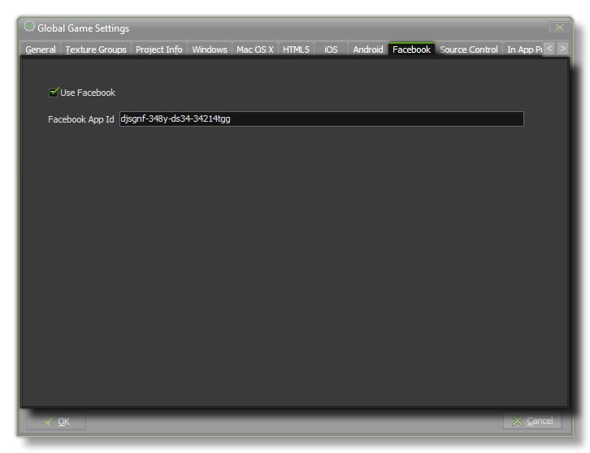

The Facebook Tab
This section deals with the Facebook options of the Global Games Settings Window.

The login process for Facebook through GameMaker:Studio is quite straightforward and requires that you have this tab set up correctly. if you are wanting to use the Facebook functions in your game,
here you should tick the box labeled "Use Facebook" and below that supply your App ID (also called API Key) so that GameMaker:Studio can connect and communicate with the Facebook API. This key
can be found through the Apps tab on the Facebook Developers page, where you should have a section that looks a bit like this:
 Once you have the App Id, you should copy it into the Facebook App Id field of the tab. Once those two simple steps have been completed, you are ready to use the specialist
Facebook functions that GameMaker:Studio has to communicate with Facebook for getting information about the user
and posting text and images to their wall.
Once you have the App Id, you should copy it into the Facebook App Id field of the tab. Once those two simple steps have been completed, you are ready to use the specialist
Facebook functions that GameMaker:Studio has to communicate with Facebook for getting information about the user
and posting text and images to their wall.
NOTE: This functionality is limited to the Professional Version of GameMaker:Studio.